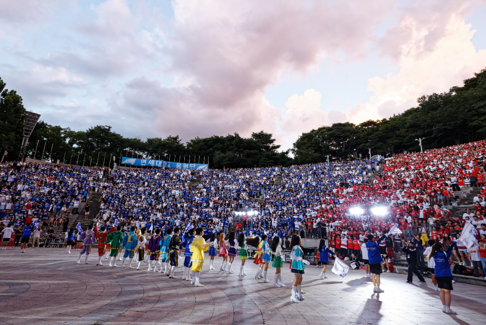
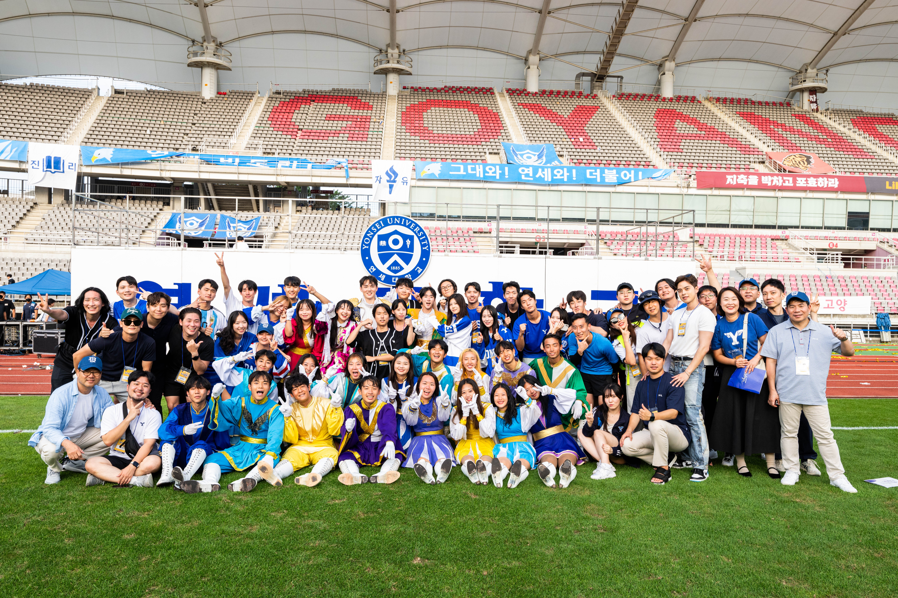
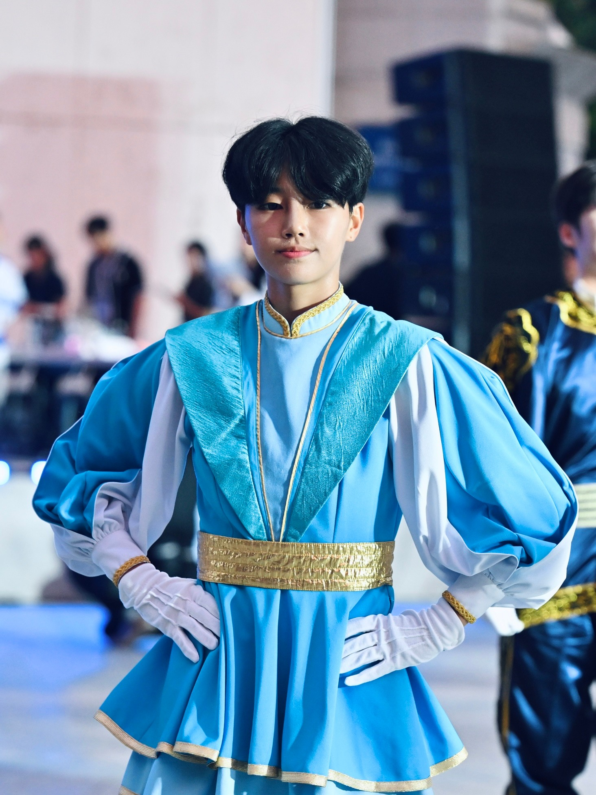
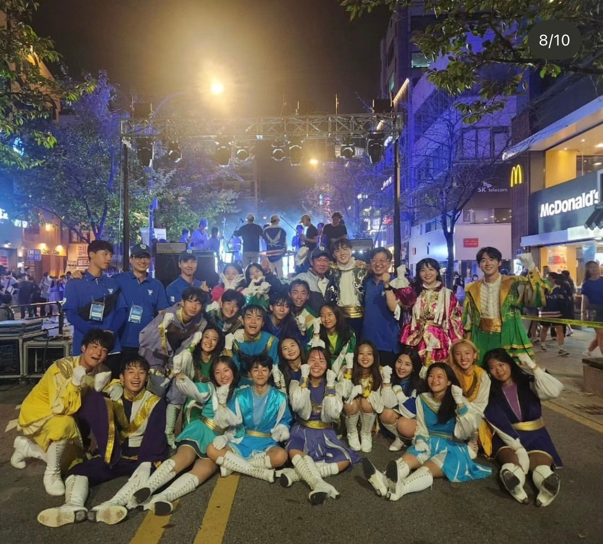

2023년 현역 응원단원으로 활동하며 "아카라카", 정기 연고전, 응원단 오리엔테이션 등 주요 대학 이벤트에 참여하여 20,000명 이상의 연세대 학생들을 메인 무대에서 대표했습니다.
영상 · 카드뉴스 · 2023-현재
연세대학교 응원단
연세대학교 응원단의 주요 이벤트 및 활동을 위한 영상 콘텐츠와 비주얼 자료 제작

2024년에는 촬영 총괄을 맡아 하이라이트 영상, 모션 그래픽, SNS용 카드뉴스 등 지원 비주얼 자료를 총괄 제작했습니다.
2025년 현재는 내부관리 기획을 담당하며 각 이벤트의 내러티브와 안무에 맞춰 비주얼을 조율하고 다른 기획자 및 선배들과 협력하고 있습니다.
Main Visuals
작업물 구성

① 응원단 활동 갤러리
연세대학교 응원단의 생생한 활동 모습을 담은 갤러리입니다.

연세대학교 응원단

연세대학교 응원단

연세대학교 응원단
Highlights
- 3년간 현역-촬영-기획의 전 영역에 걸친 경험 축적
- 라이브 이벤트 제작 및 비주얼을 통한 스토리텔링 실전 경험 구축
- 30개 이상의 영상 및 홍보 자료 제작
Gallery
이미지 아카이브